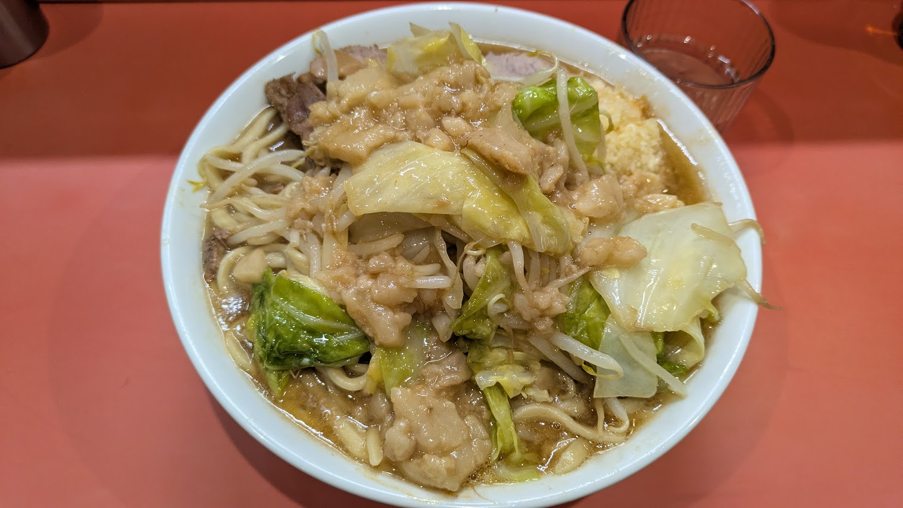

01 / ABOUT
私について
ABOUT / PROFILEHELLO, I’M INTERA.
東京都在住、情報系の大学3年生です。競技プログラミングとC++でのゲーム制作に取り組んでいます。気になったことを自分で試し、少しずつ形にしていく時間が好きです。
- HANDLE NAME
- いんてら
- STATUS
- 大学3年生(情報系)
- LOCATION
- Tokyo, Japan
- INTERESTS
- Programming / Blue Archive / 二郎
01
PRIMARY FIELD
Programming
競技プログラミング
AtCoder / Algorithm
INTEREST
Blue Archive
Player / Fan
INTEREST
Jiro
Visit / Stamp Rally

ANOTHER FAVORITE
二郎も好きです。
プログラミングやブルアカだけでなく、ラーメン二郎も趣味のひとつ。好きなことを通じて、日々の体験や交流を楽しんでいます。